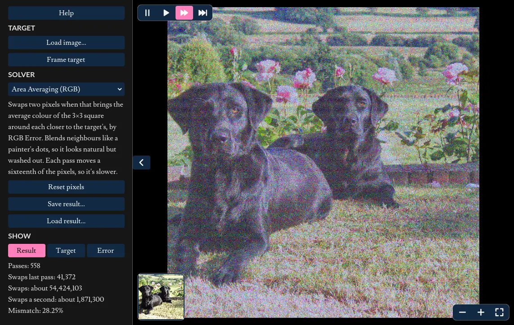
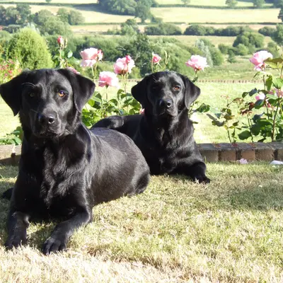
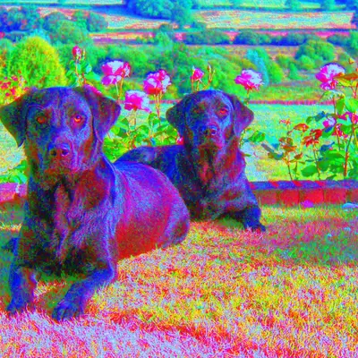
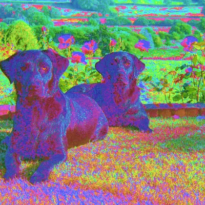
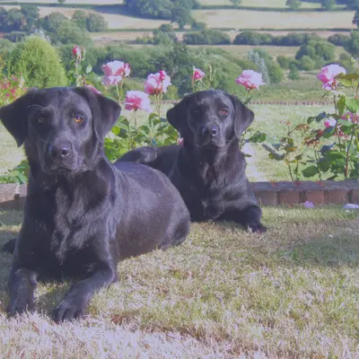
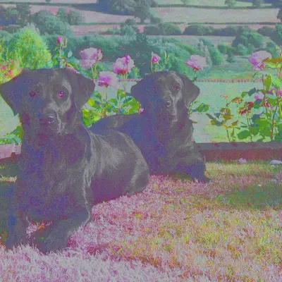

Every RGB
The interactive parts of this page require javascript to be enabled.
(There are no ADs or tracking scripts installed on this website!).

The app is a download of around 22 MB, and needs about 200 MB of graphics memory for its full 4096 × 4096 image. Phones start at half size, 2048 × 2048, which needs about 50 MB; elsewhere, Size in the left panel switches between them.
The inspiration for this project was allrgb.com, where there are many images with no two pixels the same colour. There are many approaches demonstrated, but I wanted to see if I could achieve similar results with an evolutionary algorithm.
This project is open source and can be found on GitHub
Download it
It also runs on its own, without a browser. Unzip the file for your system, keeping the two files in it together, then run "AllRGB.exe" on Windows or "AllRGB.x86_64" on Linux.
How it works
The Gist
Pick an image to replicate, then start from an output image holding one pixel of every colour: 4096 × 4096 = 16,777,216 pixels, one for each 24-bit colour. A hill-climbing algorithm then picks pairs of pixels and swaps them whenever the swap makes the output more like the target. The shaders try millions of swaps in each pass, and a good result takes billions.
There are four ways to score a swap, compared below. Each result is scaled down to 2048 × 2048; click one to see it full size.
Results

Target
The image each method tries to replicate. It's not perhaps the best example, as it doesn't contain a balanced range of colours, being heavy on green, but that does highlight the pros and cons of each method.

RGB Error
Each pixel is scored by how closely its red, green and blue values match the target pixel's. Because the target holds more green than any other colour, the reds and blues are forced into unnatural places.

HSV Error
Like RGB Error, but each pixel is compared in the HSV colour space (hue, saturation and value), with hue measured round its colour wheel. This lets the score favour matching brightness, which human eyes perceive far better than differences in colour, at the cost of colour accuracy.

Area Averaging (RGB)
Compares the average colour of a small area around each pixel, rather than the pixel alone, so nearby pixels can mix to make a colour the way dots do in print. It gives the most natural looking result, though the colours look washed out.

Area Averaging (HSV)
Area averaging again, with each area's average compared in HSV, trading some colour accuracy for brightness.